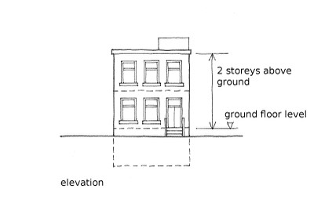
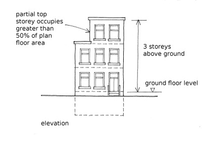

Number of storeys above ground [H]
Number of storeys or floors above ground, including the ground floor and floors above. Also includes storage and mechanical plant levels only if these cover over 50% of the plan area, but does not include basements below ground. If the building is stepped in height, then record the number of storeys of the highest part.
The number of storeys above ground can be recorded as an exact number, or as a range, or as an approximate number if the exact number is not known. It can also be recorded as unknown.

